Se tercerizó las devoluciones de un almacén y se comprobó, mediante el mismo modelo de costos, que en los otros dos era más rentable mantener la operación propia
Rediseño y tercerización mediante un proveedor de transporte de la logística inversa de un distribuidor mayorista con CEDIS y tres almacenes.

Cada quince días, una unidad propia salía del centro de distribución hacia el almacén con mercancía y volvía cargada con las devoluciones acumuladas. Ese regreso no estaba costeado. Cada auxiliar armaba las tarimas a su criterio y el envío salía cuando el camión estaba disponible. Así había operado durante años, sin incidencias que llamaran la atención.
El regreso del camión nunca tuvo partida propia: se diluía en el gasto de distribución, de modo que la operación con unidades propias carecía de un precio con qué compararse. Sobre la mesa había una propuesta de tercerización que no se podía aceptar ni rechazar con evidencia. A eso se sumaban un embalaje sin criterio único, expuesto al rechazo del transportista en el andén, y la falta de indicadores para evaluar el proceso o al proveedor.
“La decisión no era tercerizar o no: era en cuál almacén y desde cuántas tarimas.”
Ese giro, de una elección única para toda la red a una decisión por almacén y por volumen, dió claridad para tomar una decisión.
ROADMAP.
Entrevisté al personal de devoluciones y tracé el flujo operativo con unidades propias.
Flujo en notación BPMN y responsabilidades por puesto en diagrama de calles.
Manuales de Paletizado Perfecto y Recolecciones Perfectas, capacitados en el almacén.
Base de datos de envíos y tablero que calcula los indicadores solo.
Costo del transporte propio contra el tercerizado, almacén por almacén.
Viable únicamente en el almacén 1; piloto autorizado en ese punto.
Arranque de recolecciones tercerizadas en el almacén 1, no en los otros dos.
Cuatro envíos medidos; el único eslabón incumplido no dependía de la empresa.
El costo del transporte con unidad propia frente al del transportista tercerizado replanteó la intención inicial del proyecto. Tercerizar sale más barato solo por debajo de 6.18 tarimas en el almacén 1, y de 2.26 en el almacén 2 y el almacén 3. El almacén 1 mueve 2 tarimas por semana y se mantiene siempre por debajo de su límite; el almacén 2 y el almacén 3 envían 6 tarimas y lo rebasan siempre. El objetivo inicial era tercerizar en los tres almacenes: la evidencia propuso uno.
El proceso opera bajo el flujo documentado en notación BPMN y un diagrama de calles que asigna cada actividad a un puesto. El auxiliar de bodega embala conforme al manual de Paletizado Perfecto, lo que sostiene la aceptación de la carga en el andén; el auxiliar administrativo interno genera las guías y programa las recolecciones como indica el manual de Recolecciones Perfectas. Los indicadores se calculan de forma automatizada en un dashboard que la empresa opera. Ante la apertura de un almacén nuevo, el modelo de punto de equilibrio devuelve la decisión con el volumen de ese mismo almacén.
Resultados del proyecto
Tres indicadores en 100%. La brecha está en la última milla: la llegada al centro de distribución.
El modelo de tercerización de transporte en la logística inversa se implementó en el almacén 1 porque el costo fijo de operar con unidades propias era mayor que el costo variable de transportar con un proveedor tercerizado. El volumen real en el almacén 1 es de 2 tarimas mientras que el punto de equilibrio es igual a 4.11 tarimas, por debajo de este punto conviene tercerizar. En el almacén 2 y almacén 3, el volumen real es de 6 tarimas mientras que el punto de equilibrio es igual a 3.30 tarimas, en este caso, el costo fijo de operar con unidades propias es menor que tercerizar el transporte con un proveedor logístico.
Almacén 1
Almacén 2 y Almacén 3
Datos reales protegidos. Caso anonimizado por confidencialidad.